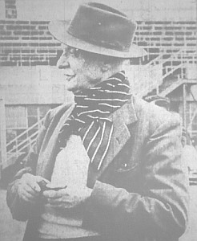

Edward Le Brocq
1877-1964

Douard Lé Bro 'tait journaliste en Angliais tchi êcrivait d's articl'yes en Jèrriais redguliéthement pouor bein longtemps.
I' fut né l'10 d'Novembre 1877 à Homestead, Les Augu'thez, Saint Pièrre, septchième fis d'Francis Lé Bro. En 1889 il entrit au Collège Victoria, épis s'en fut travailli parmi l's Êcrivains dans la Rue ès Trais Pigeons. En 1900 i' s'mathyit à Kate Madeline Brayn dé Highfield, Saint Saûveux, et s'mînt à fèrmer pouor eune dgiexaine d'années. Au mais d'Mai 1910 i' d'vînt journaliste auve l'Evening Post, et après d's'années, rédacteu du Morning News.
Lé preunmié neunmétho du Jersey Critic fut publié l'27 d'Août 1921 et cont'nait la preunmié lettre dé Ph'lip dé Portînfé. Pouor la fîn d'sa vie il avait êcrit des chents d'articl'yes dans les gâzettes entouor "Ph'lippe et Mêrrienne".
Sa preunmié femme mouothit duthant l'épidémie d'la grippe en 1918. En 1923 i' s'èrmathyit à Hazel Maud Fauvel, dé Saint Martîn. Il eut quat' mousses auve sa preunmié femme, et trais auve sa deuxième. Missis Lé Bro travaillait en Angliétèrre duthant la Deuxième Dgèrre Mondiale, et auprès la Libéthâtion, Douard Lé Bro s'en fut la r'jouaindre. En 1946 i' r'vînt en Jèrri pouor èrlanchi l'Morning News. Quand chutte gâzette-là freunmit en 1949, i' s'èrtithit coumme journaliste rédgulyi mais continnuait à contribuer d's articl'yes et sustout l's histouaithes dé Ph'lip et Merrienne.
I' mouothit lé 10 d'Avri 1964.
Nécrologie d'1964:
Edward Le Brocq, fils François
1877-1964
Lé décès du Sieur Douard Lé Bro lé 10 d'avri, dans sa 87e,. nouos prînt iun des hommes les pus connus d'l'Ile - vrai type Jèrriais, bel homme et haut, et drait comme un pitchet, homme dé grand' connaîssances et r'mèrquabl'ye sus bein des sens. Il avait c'menchi sa vie parmi l's Êcrivains, dans la Rue ès Trais Pigeons, pis s'mînt à fèrmer pouor eune dgiexaine d'années. auprès ch'la i' fut journaliste, à c'menchi auve lé pèrsonnel dé l'"Evening Post", et d'vînt pus tard rédacteu du "Morning News", avant étout publié eune autre gâzette pouor bein d's années connue souos l'nom dé "Jersey Critic". Là i' disait ch'tch'i' savait et pensait entouor les affaithes dé l'Île. D'un d'vis franc, rein n'lé dêrangeait! I' d'vînt vraiement fanmeux et tout l'monde lé connaissaient comme "Lé Critic"! Duthant l'Otchupâtion d'l'Île par les Allemands il en fît dé bein des sortes, s'en allant eune volée en Angliétèrre auprès la dgèrre, en travas pouor lé Gouvèrnément, etc. Et pis i' r'vînt pouor èrquémenchi la publyicâtion du "Morning News" (tch'avait cêssi duthant la dgèrre). Comme ch'la, à l'âge dé beintôt 80 ans, il 'tait dév'nu homme dé grande expérience. Il avait resté întérêssi dans la vaque Jèrriaise toute sa vie et fut considéthé pouor bein d's années iun des touos preunmièrs expèrts au sujet, p't-être même lé tout preunmyi.
Né à St. Pièrre, d'eune fanmil'ye St. Pièrraise, mais d'originne vielle St. Ouonnaise, lé Sieur Lé Bro pâlait un mangnifique Jèrriais et fut iun des miyeu' raconteurs, en Jèrriais et en Angliais, sustout comme învité ès chents dînnièrs donnés dans l'Île avaû l's années. Il avait eune mémouaithe mèrveilleuse et un sens d'humour dé campangne comme pèrsonne d'autre.
Ayant dit tou ch'la, i' nouos reste lé r'gret qué nou n'èrliêtha janmais d'autre les articl'yes entouor "Ph'lippe et Mêrrienne, dé Portînfé". I'n 'n'avait êcrit bein seux des chents d'ches articl'yes, en un mangnifique Jèrriais pliein d'întéthêt et d'un style exceptionnel tchi n'appartnait qu'à li-même. I' nouos faîthait rithe ou souôrithe châque sémaine comme pèrsonne d'autre n'éthait peu l'faithe. Sa manniéthe d'êpeler nouot' vielle langue n'était pon des pus solides - i' n'avait dgéthe fait assez d'împortance dé ch'la, sans doute - mais i' prendra cèrtainment sa pliaiche d'honneu parmi les cheins tchi l'ont êcrite, comme raconteux d'preunmié clâsse et Jèrriais d'la vielle trempe.
FLM
Viyiz étout:
Ph'lip is Still Out of Luck
Ph'lip on the Old Militia
Ph'lip pâsle des Connêtablyes
Ph'lip raconte une histouaithe
Ph'lip rencontre trais messieux
Ph'lip Sends an S.O.S.
Ph'lip tries to get some pork
Ph'lip va à la Bataille
Ph'lip va à l'Hôpita
Ph'lip va à la lune
Ph'lip va à Saint Piêrre
Ph'lip va ès courses
Ph'lip va ès "shows" et au Muratti
Ph'lip veur des nouvelles
Ph'lip veur s'bagnié
Ph'lip wants to buy a car
Ph'lip Wants to go to the Point to Point
Les Plians et les Paraissiens
The Police Question
La Politique et l'crime à Frémont
La Politique, les louogements et l's êcoles
La Pouaison et les Sénateurs
Les poules à la Merrienne
Le pouore homme mathié
Pourtchi vouler être membre d's États?
Prédithe lé temps
La Princesse Marguérite
The Problem of a Grandson
Des problèmes au Portînfé
Les problèmes des louages et du trafic
The Promise To Obey
Les p'tites routes à Saint Louothains
Pus fraid que Jamais?
Quand nou jouait des farces
Quand Ph'lip plieuthit
Lé Quatorze Févri
The Question of Shorter Skirts
La reconciliation à Portinfé
Le r'nouvé a Portinfé
Une rude niet au Portinfé
St Piêrre, St Louothains
Les Sénateurs et les Bêtes
Senator Or Deputy?
Des Sénateurs Batilleux
La serclye, le Chantgni et les courses
Le Service Militaire
Le Service Militaire
Lé Sèrvice Nâtional
Set Fair At Portinfer
La séthée à Paramé
Siouville gâgne
La S'maine de Pâques
La S'maine Sainte
Storms at Portinfer
Une 'Strike' à Portinfé
Sus l'Bridge
A Talk about Married Life
Tchesqu'est la miyeu vaque
Tchiquechose de spécial à Saint Sauveux
Tchiquechose qué Ph'lip n'avait jamais veu
La Tempête
Le Temps et autre chose
This petrol business
Tomato failure at Portinfer
La Tonnelle
Les touristes, les Villais et la campagne
Trais mille louis pour un boeu!
Triste Nouvelle
Des vacances en Ville
La Vaccination
Lé Vendredi Saint
Vendredi Saint
Le Vendredi-Saint
Lé Vendrédi Saint
Le Vendredi Saint
Le Vendredi Saint
Vendredi-Saint au Portinfé
Le Vendrédi Saint à Portinfé
Les vents d'Est
La Vie d'un Fermyi
Le Vier Marchi
La Ville et les boutiques
La vîsite d'la Reine-mèthe
La Visite en Irlande
La Visite Royale
Les Vîsites du Branchage
Les Visiteurs
A Visitor Calls at Portinfer
Water is short at Portinfer
Why women live longer than men
A Women's Political Party
Y fait trop caud
All is Well at Portinfer
Chein qu'ch'est que d'êcouter les femmes!
Les Deux G'niches
L'êlection pour Connêtablye d'la Ville
L'élection pour Sénateurs
An Englishman at Portinfer
The farm is not sold
Grande Jouaie À Portinfé
Un jour de surprînses
Merrienne complains of the cold
Merrienne est ocquo întérrêssie dans la politique
Merrienne et lé déluge
Merrienne et san jeune couplye
Merrienne fait une bêtise
Merrienne gets a soaking
Merrienne goes to the Eisteddfod
Merrienne goes to Town
Merrienne makes a prediction
Merrienne on Politics
Merrienne on the thirty dozen
Merrienne sees two Candidates and promises both
New Year Resolutions at Portinfer
Ph'lip and his clothing coupons
Ph'lip and Merrienne on divorce
Ph'lip attends a Conference
Ph'lip Breaks His Back...
Ph'lip Digs His Early Patch
Ph'lip Est Bein Mârri
Ph'lip et l' “show” d'l'Ile
Ph'lip et la bête féroce
Ph'lip et la providence
Ph'lip et l's Etats
Ph'lip Va Sus L'mus
Ph'lip wants a holiday
Ph'lip wants an outing
Toutes sortes de changements
A Fanmail Letter For Ph'lip From The African Jungle
Hommage à la mémouaithe dé Ph'lippe dé Portînfé